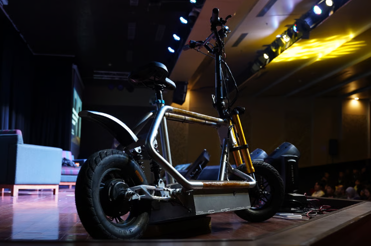

№ 01 / 03

SCOTERA EcoScooter.
An award-winning ergonomic electric scooter prototype — designed end-to-end with a focus on sustainable urban mobility and human-centered ergonomics.
Autodesk Inventor
AutoCAD
Blender
Ergonomic Analysis
View Detais